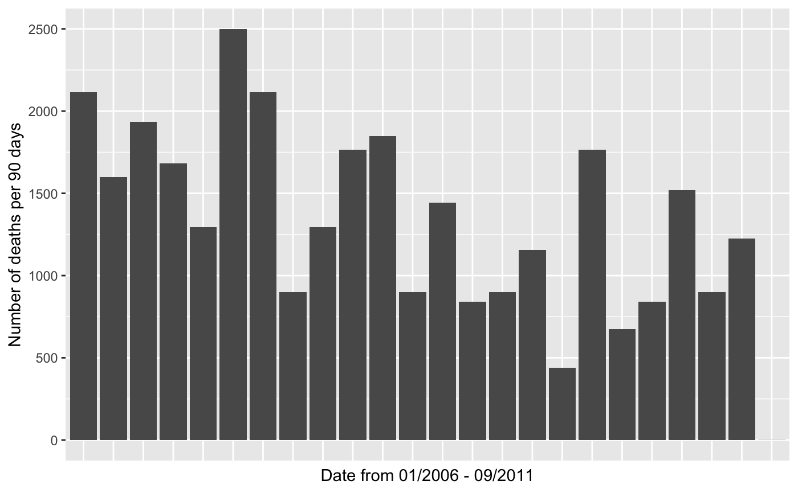

london_murders.RdThis dataset contains the victim name, age, and location of every murder recorded in the Greater London area by the Metropolitan Police from January 1, 2006 to September 7, 2011.
A tibble with 838 observations on the following 5 variables.
First name(s) of the victim.
Age of the victim.
Date of the murder (YYYY-MM-DD).
Year of the murder.
The London borough in which the murder took place. See the Details section for a list of all the boroughs.
http://www.met.police.uk/foi/pdfs/disclosure_2011/september/2011080003610.pdf
To visualize this data set using a map, see the
london_boroughs dataset, which contains the latitude and
longitude of polygons that define the boundaries of the 32 boroughs of
Greater London.
The borough variable covers all 32 boroughs in Greater London:
Barking & Dagenham, Barnet, Bexley, Brent,
Bromley, Camden, Croydon, Ealing,
Enfield, Greenwich, Hackney, Hammersmith &
Fulham, Haringey, Harrow, Havering, Hillingdon,
Hounslow, Islington, Kensington & Chelsea,
Kingston, Lambeth, Lewisham, Merton,
Newham, Redbridge, Richmond, Southwark,
Sutton, Tower Hamlets, Waltham Forest,
Wandsworth, Westminster
Inspired by The Guardian Datablog.
data(london_murders) library(dplyr) library(ggplot2) library(lubridate) london_murders %>% mutate( day_count = as.numeric(date - ymd("2006-01-01")), date_cut = cut(day_count, seq(0, 2160, 90)) ) %>% group_by(date_cut) %>% add_tally() %>% ggplot(aes(x = date_cut, y = n)) + geom_col() + theme(axis.text.x = element_blank(), axis.ticks.x = element_blank()) + labs(x = "Date from 01/2006 - 09/2011", y = "Number of deaths per 90 days")